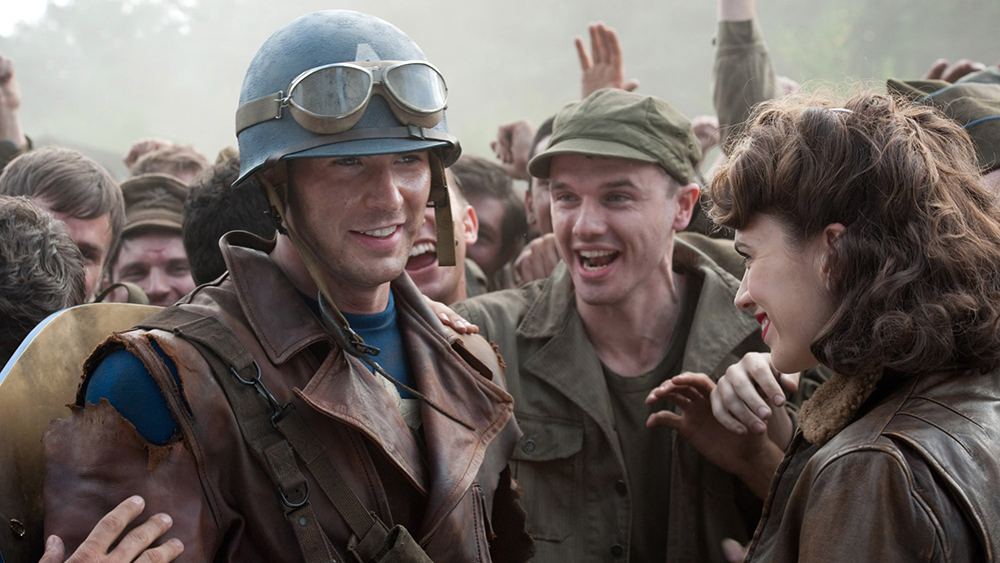

About Captain America
Captain America is an american super soldier who fights for the right of his people.

Captain America returns
Captain Americas Characteristics
- He's got super strength
- He's as fast as a bullet
- He's a hundred years old
Captain Americas Friends and Allies
Captain America has a army full of allies. Some of his best friends and companions are Bucky Barnes and Sam Wilson. Click on the links below to read more about them: